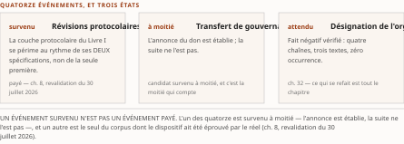
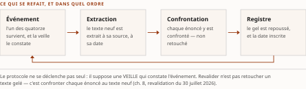
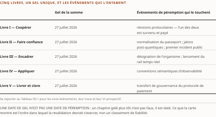

Chapitre 50Péremption et protocole de revalidation
Livre V — Livrer et clore : l'agent comme livrable logiciel, horizon et frontière. Second mouvement — horizon et frontière de la connaissance vérifiable (ch. 49-50). **Dernier chapitre de la somme** : le second mouvement du Livre V est terminal, et toute insertion future se fait avant lui (décision 9 du TOC)
Un ouvrage daté doit dire quand il cesse d'être actuel. Le domaine évolue par trimestres, et c'est pour cette raison que chaque pièce de la somme porte sa date de gel. Ce chapitre clôt l'ouvrage par la discipline évidentiaire du Vol. II : d'abord ce que le blueprint ne parvient pas à établir (§ 50.1), puis ce qu'un événement daté rendra non actuel (§ 50.2), puis la procédure par laquelle un lecteur — ou l'auteur — reconstitue la validité du document à une date ultérieure (§ 50.3), enfin la convention de datation elle-même (§ 50.4). Les deux premiers registres relèvent de la connaissance ; les deux derniers, de la méthode.
Une distinction gouverne tout le chapitre, et elle est reprise du Vol. II Monographie §21.3 : périmer n'est pas falsifier. Ces échéances ne dégradent pas la somme de façon diffuse — chacune vise une formulation précise, et celle-là seulement. Et parce que ces formulations sont datées, l'événement ne les rend pas fausses mais non actuelles : le lecteur postérieur lit un énoncé qui a changé de temps grammatical. C'est la fonction même de la date de gel ; seule basculerait dans le faux une formulation que l'événement contredirait sans être bornée par la sienne.
§ 50.1Les lacunes propres au blueprint
Le blueprint de la somme — l'architecture de référence des ch. 42 à 46 — porte cinq lacunes propres, héritées du Vol. II, une sixième ayant été résolue avant son gel. ⚠ Le ch. 45 en est le siège (lacune §10.6 du PRD du Vol. II, registre de l'Annexe C, qui l'assigne au ch. 45 et à celui-ci) ; cette section les rassemble sans les rouvrir, et le tableau des sept liens qu'elle commente vit au ch. 45 § 45.4. ⚠ Ce chapitre-là est rédigé hors de la présente passe : le renvoi, qui était de plan à la rédaction, résout désormais contre un texte que cette relecture n'a pas lu.
Ce qui a été résolu, et par quoi. Jusqu'à une passe de revalidation du 16 juillet 2026, la trajectoire événementielle du portefeuille d'intégration reposait sur une annonce dont l'aboutissement n'était pas confirmé — une acquisition dont une couche entière du blueprint dépendait. Elle a été clôturée le 17 mars 2026, trois mois et neuf jours après son annonce du 8 décembre 2025. ⚠ Le point de méthode compte plus que le fait : cette lacune a été résolue par une seule vérification ciblée sur la source primaire de l'éditeur — elle mesure ce qu'une passe de revalidation disciplinée accomplit, et, par contraste, ce que les cinq suivantes ont d'irréductible avec les moyens documentaires disponibles.
Ce qui subsiste, et à quel titre. (1) La position au quadrant magique de Gartner sur le marché de l'intégration en tant que service n'est pas vérifiée — ⚠ R-6 du Vol. II : le socle établit deux autres positions de tête, mais aucune des deux ne conjugue la même firme ET le même marché — une au Wave de Forrester sur ce marché-là au troisième trimestre 2025, une au quadrant magique de Gartner sur le marché de la gestion des interfaces de programmation en 2025 —, et ni l'une ni l'autre ne tient lieu du quadrant non vérifié. ⚠ L'attribution ne s'anonymise pas ici (décision 15) : une position de classement est une affirmation d'analyste, et elle vaut par qui la porte. (2) L'éditeur ne publie aucune architecture agentique propre aux services financiers — vérification faite sur son catalogue et sur ses ouvrages techniques : la déclinaison du patron générique vers le contexte d'une institution financière fédérale canadienne est le travail de la somme, non celui de l'éditeur, et chaque descente du patron vers le cas canadien produit une inférence d'auteur. (3) La chaîne reliant la messagerie transactionnelle au traitement des messages financiers normalisés reste au niveau [C] après une élévation tentée et échouée : le lien n'est confirmé que par un ouvrage technique de 2016, et les pages de documentation de l'éditeur refusent systématiquement l'accès aux outils de vérification automatisée. ⚠ La re-datation du 28 juillet 2026 a rencontré le même refus — et c'est ce qui le qualifie : un obstacle reproduit à onze jours d'intervalle n'est pas un incident, c'est une propriété durable de la source. ⚠ Cette lacune a donc une valeur méthodologique qui dépasse son objet : elle montre qu'une élévation de niveau de preuve peut échouer sans que la recherche ait été négligée, et que l'échec doit alors être écrit — avec sa date, ses moyens et son motif — plutôt que dissimulé derrière une formulation prudente. (4) Sur les sept liens du tableau de correspondance réglementaire, cinq sont des inférences d'auteur ; une seule est documentée — et pour le seul rôle opérationnel d'un intégrateur sur les rails de paiement, non pour une conformité ; la septième est une attente réglementaire où il est interdit d'anticiper. (5) Le document est daté, et c'est l'objet des trois sections suivantes.
La quatrième lacune est structurelle et ne sera pas comblée par une recherche — et l'inverse serait plus grave. Qu'une majorité des correspondances réglementaires soient des inférences n'est pas un défaut du blueprint : c'est la seule écriture honnête d'un rapprochement qu'aucun texte ne prescrit. Quatre cas doivent rester distincts : l'inférence adossée à un fait négatif établi — l'éditeur ne revendique aucune conformité à deux lignes directrices nommées, et ce fait négatif est établi, il est écrit ; l'inférence simple, où il serait faux d'ajouter que l'éditeur ne revendique aucune conformité en général, le socle attestant au contraire des revendications pour trois autres cadres ; le lien documenté, qui interdit l'universel inverse ; et l'attente réglementaire, où aucun standard n'est nommé et où rien ne doit être anticipé (⚠ R-5 du Vol. II).
Et le régime d'absence n'est pas uniforme à l'intérieur même des inférences : pour la ligne directrice québécoise en matière d'intelligence artificielle, le socle n'a rien cherché — absence de documentation, non le fait négatif établi des deux précédentes. Les deux formules ne s'échangent pas (⚠ R-14 du Vol. III), et le ch. 45 § 45.4 les porte rangée par rangée : la première interdit d'écrire que l'éditeur revendique, la seconde interdit d'écrire quoi que ce soit.
§ 50.2Les événements de péremption
Les lacunes disent ce que l'on ne sait pas ; les événements de péremption disent ce que l'on sait aujourd'hui et qui cessera d'être vrai à une date largement prévisible. ⚠ Ce n'est pas un calendrier : c'est un inventaire d'événements, chacun avec sa trace, son tri prospectif quand il en porte un, et la partie de la somme qui tombe s'il survient. Le siège du tri est au ch. 49 § 49.0, et il n'est pas redéfini ici.
| Événement | Ce que le socle en porte | Tri | Ce qui se refait |
|---|---|---|---|
| Désignation de l'organisme de normalisation technique, par arrêté ministériel | fait négatif vérifié (S-033, balayage rejoué et tenu au 28 juillet 2026 : quatre chaînes, trois textes, zéro occurrence) ; au 27 juin 2026 le texte officiel écrit encore « sera désigné » (S-115) ; ⚠ la candidature d'un organisme relève du commentaire d'industrie, non d'une position officielle (R-5) ; ⚠ l'index de la Gazette, partie II, n'a pas été balayé — le socle ne documente pas l'existence d'un arrêté : degré 3, non fait négatif vérifié |
PROGRAMMÉ sans date d'engagement — l'obligation est inscrite dans un texte, aucune échéance ne lui est associée | ch. 30, ch. 32 en entier ; la ligne « cadre bancaire » du tableau des jalons externes, ch. 46 § 46.3, et celle du tableau de correspondance réglementaire, ch. 45 § 45.4 ; lacunes §10.1 du Vol. II et 3 du Vol. III. ⚠ Lecture de l'auteur de tous les événements listés, c'est celui qui porte le plus fort potentiel de réécriture : le socle établit qu'aucun organisme n'est désigné et que le texte officiel maintient le futur (S-033, S-115) ; il n'établit ni l'ampleur ni le rang du bouleversement qu'un arrêté produirait. Ce qui se mesure au tableau, en revanche, est qu'il est le seul des onze dont la date reste inconnue |
| Lancement effectif du rail temps réel canadien | ⚠ La double contrainte se tient des deux mains : d'un côté une cible officiellement annoncée au quatrième trimestre 2026, à l'issue de tests industriels — écrire qu'aucune date n'est annoncée serait faux ; de l'autre quatre cibles successives — 2019, 2022, 2023, 2026 — et un système qui n'est pas en production — écrire qu'il est lancé serait tout aussi faux (R-4, réserve F-29, soit S-027). ⚠ La re-datation du 28 juillet 2026 constate les deux mains : l'historique de cibles n'a pas été rallongé, et le rail n'est pas lancé. ☑ Revalidé le 2 septembre 2026 : le règlement administratif est en vigueur depuis le 24 août 2026 (DORS/2026-133) et le rail n'est toujours pas lancé ; la cible demeure le T4 2026, l'historique n'est pas rallongé. ⚠ L'entrée en vigueur du cadre n'est pas la mise en service du système |
PROGRAMMÉ conditionnel | tout énoncé au futur sur ce rail bascule au passé — ou se reformule si la cible glisse une cinquième fois ; ch. 33, ch. 36 |
| Révisions du protocole agent-outil et du protocole agent-agent | ⚠ La couche protocolaire entière du Livre I se périme au rythme de SES DEUX spécifications, non de la seule première — c'est le point que les versions antérieures du plan perdaient. ☑ Côté agent-outil, l'événement EST SURVENU : la révision annoncée au brouillon — protocole sans état, retrait de l'en-tête de session — est servie à sa source le 28 juillet 2026 (S-001, ☑ changée), le jour même que la source annonçait. ⚠ La divergence de statut que ce chapitre signalait à la rédaction est close par l'événement, non par un arbitrage : les trois volumes en portaient trois lectures — révision visée, finalisation attendue, date non confirmée à la source (R-09) —, et les trois demeurent exactes à leur date. ☐ Côté agent-agent, rien n'a bougé : dernier correctif de la ligne v1.0.1 au 28 mai 2026, aucune version majeure ni mineure neuve (S-002) |
⚠ Tri partagé, et le partage est le résultat : ☑ FAIT ÉTABLI pour l'agent-outil, événement survenu et non prévision ; ⚠ aucun tri attribué pour l'agent-agent, l'abstention gardant son motif d'origine — le PROGRAMMÉ exige un engagement daté portant sa source, et c'est la date qui manque | ch. 8 en entier — l'échéance était échue au lendemain du gel unique que D-1 a refusé d'avancer d'un jour pour l'absorber. ☑ ⚠ LA REVALIDATION EST EXÉCUTÉE le 30 juillet 2026 (D-11), sur le journal des changements de la révision 2026-07-28 extrait à sa source : six sous-sections du ch. 8 revalidées en bloc — § 8.1.2, § 8.1.3, § 8.2.1, § 8.2.2, § 8.2.3, § 8.3.1 — et le § 11.3.1 pour la surface d'attaque. ⚠ Le versement au socle demeure dû : un rédacteur ne verse pas, il remonte ; ch. 11 ; ch. 47 § 47.4 |
| Transfert de gouvernance du protocole de paiement agentique | ⚠ CANDIDAT SURVENU À MOITIÉ, et c'est la moitié qui compte. ☑ L'ANNONCE est établie : le don à la FIDO Alliance, annoncé le 28 avril 2026 par un billet officiel de l'organisation cédante, est constaté sur ses quatre éléments — date, version, cas d'usage nommé, deux groupes de travail techniques —, ce qui a instruit la lacune §10.9e du Vol. II par source primaire nouvelle datée (S-090). ☐ Le TRANSFERT, lui, n'est pas matérialisé : trois mois après l'annonce, le dépôt canonique demeure chez l'éditeur d'origine, sa racine ne porte aucun document de gouvernance ni de charte, l'index de spécifications du cessionnaire ne publie rien d'agentique, et les deux groupes de travail sont annoncés sans échéance (S-091) |
⚠ FAIT ÉTABLI — de l'annonce, non du transfert. Ce que la somme périmera est la matérialisation, et elle n'est pas survenue | ch. 10 ; la divergence correspondante de l'Annexe C, re-tranchée sur pièce. ⚠ Le socle gelé du Vol. II n'est pas corrigé rétroactivement : le fait s'écrit comme postérieur à son instruction, et cela se dit |
| Normalisation du passeport d'agent | ⚠ Le passeport ne figure dans AUCUNE spécification à date : c'est un objet de synthèse construit par le corpus (R-01). Le relevé propre du Vol. III n'en confirme aucune échéance — un brouillon de travail du 11 mai 2026, un stade de recommandation candidate du 5 mars 2026 non dépassé, sept documents de groupe de travail dont aucune date de publication n'est annoncée | ⚠ Tri mixte, et il ne se simplifie pas : SPÉCULATIF pour l'assemblage des quatre pièces, PROJETÉ pour deux des trois voies ; aucun des trois n'est PROGRAMMÉ, l'absence de jalon daté étant le critère du PROGRAMMÉ | ch. 16 en entier ; R-01 ; la couche « identité et registre » du tableau des six couches, ch. 43 § 43.1 |
| Stabilisation des conventions sémantiques d'observabilité | dépôt dédié sans version citable ; documents agentiques au premier des cinq échelons — développement, alpha, bêta, candidat, stable ; rupture datée du 12 juin 2026 | SPÉCULATIF — aucun jalon daté relevé | ch. 38 ; ch. 40 ; lacune 15 du Vol. III ; la couche « exploitation » du ch. 43 § 43.1 |
| Premier incident public documentant l'usurpation du justificatif propre d'un agent ⚠ (intitulé corrigé à la source, puis au plan — voir ci-dessous) | Des incidents d'identité non humaine sont publics, datés et documentés — une campagne d'août 2025, jetons compromis, révocation d'ensemble le 20 août 2025. Ce qui reste non documenté est l'usurpation du justificatif propre d'un agent, et cela seul | SPÉCULATIF — scénario, sans calendrier ni engagement | ch. 19 § 19.1 ; ch. 20 ; la portée de R-08 ; ⚠ et le § 47.6, dont les divulgations candidates du 1ᵉʳ semestre 2026 ne sont pas instruites |
| Jalons post-quantiques | libellés portés par un projet public initial, non par une norme finale ; ⚠ jamais fusionnés avec les deux instruments fédéraux de juin 2026, ni avec un rapport conjoint européen qui ordonne par le risque sans calendrier daté (R-11) | PROJETÉ — intention d'une institution dans un document à l'état de projet | ch. 21 en entier ; ch. 13 ; la ligne « jalons post-quantiques » du tableau des jalons externes, ch. 46 § 46.3 ; lacune 13 du Vol. III. ⚠ Le siège est le ch. 21 § 21.1 ; aucun jalon n'est re-daté ici |
| Entrée en vigueur simultanée d'E-23 et de la ligne directrice IA de l'AMF | 1ᵉʳ mai 2027, échéance datée portant sa source ; ⚠ la « période de transition » de dix-huit mois est portée par un document d'information, non par le corps de la ligne directrice | PROGRAMMÉE | ⚠ Ce n'est pas une péremption au sens strict, mais une péremption DE DISCOURS : tout ce que la somme écrit au futur proche — « les institutions devront », « d'ici l'entrée en vigueur » — bascule au présent ce jour-là, et la question cesse d'être « comment se préparer » pour devenir « comment se conformer ». Ch. 25, ch. 27 ; la couche « gouvernance » du ch. 43 § 43.1 |
| Expiration des documents de groupe de travail mobilisés | des jetons de transaction expirant le 7 janvier 2027 ; l'un des sept documents d'identité de charge de travail — ⚠ matière du socle IAM, siège au ch. 3, non reconstruite ici — expirant le 3 septembre 2026 ; ⚠ relevé horodaté et périssable : toute rédaction postérieure rejoue l'entrée avant citation. ⚠ REVALIDÉ LE 2 SEPTEMBRE 2026, ET L'ÉVÉNEMENT N'A PAS EU LIEU : les documents ont été renouvelés avant leur terme — l'un le 27 août, l'autre le 26 août —, et leurs échéances tombent désormais en février 2027. La nature de l'événement est donc corrigée : une expiration se repousse par un dépôt de routine ; ce qui menace ces lignes est l'adoption ou l'abandon, non le terme | PROGRAMMÉ — dates portées par les documents eux-mêmes, ⚠ et repoussées par eux | ch. 12, ch. 17 § 17.1, ch. 18 ; lacune 14 du Vol. III. ⚠ Le cardinal « neuf chantiers, six organisations » du ch. 18 se re-mesure au gel de publication — deux de ses lignes reposent sur des documents expirant les 27 septembre et 24 novembre 2026 |
| Textes réglementaires finaux postérieurs à l'été 2026 | le règlement du cadre bancaire est prépublié ; sa période de commentaires s'est close le 26 août 2026 — ☑ soixante jours confirmés à la source le 2 septembre 2026 — et ⚠ aucune publication finale n'est parue : le texte demeure prépublié et peut différer du texte final ; dans la même fenêtre, un règlement administratif du rail temps réel entre en vigueur le 24 août 2026 | PROGRAMMÉ | ch. 32, ch. 33 ; ⚠ un corpus gelé en juillet 2026 traverse deux échéances réglementaires en six semaines |
| Retrait de l'interface d'assistants d'un éditeur de modèles ⚠ (rangée ajoutée le 2 septembre 2026) | dépréciation annoncée le 26 août 2025 par l'éditeur, retrait fixé au 26 août 2026 — ⚠ soit vingt-sept jours après la date d'arrêt de l'ouvrage. L'interface qui la remplace unifie des primitives agentiques et un état serveur ; le format sans état d'un autre éditeur reste la référence émulée | PROGRAMMÉ — et la question que le ch. 9 avait remontée est tranchée ici : une date publique, annoncée par le responsable de l'objet, un an à l'avance est l'exemple type de l'engagement daté réel du § 49.0. Ce n'est ni une prévision d'analyste, ni un pari. ⚠ Et il est SURVENU : la date est passée au 2 septembre 2026 | ch. 9 § 9.4 ; ⚠ ce qui se refait n'est pas la thèse du chapitre — le format de fait demeure —, c'est la description de la pile d'un éditeur, et toute phrase de la somme qui la suppose disponible |
| Étape parlementaire du projet de loi fédéral sur l'IA et les données ⚠ (rangée ajoutée le 2 septembre 2026) | le socle qualifie son objet de fait le plus périssable du socle du Vol. II ; ⚠ aucune date n'est portée, et c'est le renseignement : un texte mort au feuilleton ne se périme pas à une échéance, il se périme à une reprise | PROJETÉ — une reprise législative est une prévision d'institution, non un engagement daté ; elle exige une source nominative et n'en a pas | ch. 26 en entier, que la pièce déclare elle-même la plus vite périmée de son mouvement ; ⚠ la rangée « textes réglementaires finaux » ne la couvrait pas — elle renvoie aux ch. 32 et 33 |
| Suites de la consultation d'un régulateur des valeurs mobilières ⚠ (rangée ajoutée le 2 septembre 2026) | consultation close, doctrine non republiée ; ⚠ aucune suite datée | PROJETÉ — même régime que la rangée précédente, et pour la même raison : la clôture d'une consultation n'engage aucune date de suite | ch. 28 ; ⚠ l'objet est du genre exact que ce tableau recense — une consultation close dont une suite ferait tomber une partie de la somme —, et son absence tenait à ce que nul ne l'y avait portée |
Tableau 50.1 — Les quatorze événements de péremption de la somme, avec leur trace, leur tri prospectif et leur incidence. État au gel du 27 juillet 2026, deux rangées re-datées au 28, trois rangées AJOUTÉES le 2 septembre 2026 (D-16) — le retrait d'une interface d'assistants, l'étape parlementaire du projet de loi fédéral, les suites d'une consultation de valeurs mobilières. ⚠ Les trois manquaient, et trois pièces l'avaient remonté séparément — ch. 9, ch. 26, ch. 28 —, chacune demandant « l'inscription ou le motif de l'exclusion » ; aucun motif d'exclusion n'a résisté, l'objet des trois étant du genre exact que ce tableau recense. Cardinal et ventilation re-mesurés sur la colonne « Tri », rangée par rangée : quatorze événements, dont quatre PROGRAMMÉS simples (E-23/AMF, expiration des documents de groupe de travail, textes réglementaires finaux, retrait de l'interface d'assistants — le seul dont la date soit passée), un PROGRAMMÉ sans date d'engagement (désignation de l'organisme), un PROGRAMMÉ conditionnel (rail temps réel), trois PROJETÉS (jalons post-quantiques, étape parlementaire, suites de consultation), deux SPÉCULATIFS (conventions sémantiques d'observabilité, premier incident public), un à tri mixte (normalisation du passeport), un à tri partagé (révisions protocolaires — FAIT ÉTABLI d'un versant, aucun tri de l'autre) — et un FAIT ÉTABLI borné à l'annonce (transfert de gouvernance). La ventilation somme à quatorze. ⚠ Le relevé de la rédaction écrivait « quatre PROGRAMMÉS » et sommait à douze pour un total de onze : une ventilation déclarée re-mesurée qui ne somme pas à son propre cardinal est le défaut que tout ce tableau existe pour empêcher. ⚠ Deux rangées ont changé de tri à la relecture du 28 juillet 2026, et le changement est le fonctionnement du tableau, non sa réfutation : un événement attendu est survenu, un événement réputé survenu ne l'est qu'à moitié. ⚠ Les événements des deux sources ont été rapprochés, non additionnés : cinq viennent du Vol. II, huit du Vol. III, et deux paires portaient le même objet.
L'intitulé du septième événement a été corrigé, et la correction est de fond — elle vient de la source, non de ce chapitre. Le plan l'écrivait « premier incident public d'identité agentique ». Or l'absence d'incident public n'est pas une preuve de sûreté : elle peut signaler une surface encore peu déployée, une détection immature ou une divulgation non publique (R-08 du Vol. III). ⚠ Et l'absence elle-même est bornée : des incidents d'identité non humaine sont publics, datés et documentés par source primaire, et l'affirmation d'une absence générale a été écartée à l'unanimité au vote d'un lot du Vol. III. La forme ancienne revendiquait donc une absence que le socle avait explicitement retirée. ☑ Le Vol. III avait corrigé l'intitulé chez lui le 22 juillet 2026 ; la pièce a écrit la forme corrigée et remonté l'écart de son propre plan (R-IV-71), et le plan est réaligné depuis. Le siège de cette restriction est le ch. 19, où elle est posée une seule fois.
Un angle mort de cette liste même, et il est déclaré plutôt que comblé. La couche d'exécution — le harnais — n'a aucun événement dans ce tableau, alors qu'elle se révise au rythme d'un produit d'éditeur : versions, politique d'approbation, admission d'extensions. C'est une horloge plus rapide que celle des protocoles, et la seule des cinq que la thèse du ch. 47 pose — développée au ch. 47 § 47.8 — qui n'ait ici aucune ligne. ☑ La décision d'auteur D-2 a été prise le 27 juillet 2026 — sections dans l'existant, sans chapitre neuf, le plafond de cinquante interdisant d'ouvrir un chapitre de la couche d'exécution sans fusion : la présente section est l'un des deux points d'atterrissage reconnus, avec le ch. 47 § 47.8.1. ⚠ Trois choses que la décision ne change pas. (1) Le risque 14 est borné, non comblé : la somme n'a toujours aucun chapitre de la couche d'exécution, et l'écrire ici est le seul geste que le régime de preuve autorise. (2) La porte G-5 n'est pas franchie — une décision prise n'est pas une porte franchie —, et elle conditionne nommément le premier mouvement du Livre V. (3) ⚠ Le harnais n'entre pas au tableau pour autant : la relève v0.10 reste un repérage non extrait, et une rangée de ce tableau se paie d'une trace — la matière a désormais un domicile, elle n'a pas de source.

§ 50.3Le protocole de revalidation
Un document daté qui ne dit pas comment se redater n'est daté qu'à moitié. Le protocole qui suit est celui du Vol. II, repris et non réinventé ; il vaut aussi bien pour l'institution qui reprendrait ce blueprint à son compte.
Le principe : amender le socle d'abord, les chapitres ensuite — jamais l'inverse. Un fait qui évolue est d'abord constaté à sa source primaire et consigné dans un rapport de revalidation daté ; l'entrée du socle est amendée, avec son niveau de preuve ; les chapitres qui en dépendent sont alors repris et portent une nouvelle date de gel. ⚠ La discipline paraît lourde : elle est ce qui empêche un chapitre corrigé de contredire silencieusement un chapitre voisin qui ne l'a pas été. ☑ Et la conséquence de gouvernance qui rendait ce protocole inapplicable est levée : à la rédaction, G-3 n'était pas franchie et il n'y avait pas de socle à amender d'abord — le protocole était écrit et inapplicable, remontée R-IV-72. La porte est franchie le 28 juillet 2026, la condition de sortie qui enregistre ce protocole avec elle, et l'Annexe B existe : le protocole est applicable. ⚠ Et sa première application est celle-là même qui l'a rendu applicable : l'instruction du volet résiduel de G-1 a amendé le socle d'abord et les chapitres ensuite, dans l'ordre exact que le protocole prescrivait sans pouvoir l'exiger.
☑ Et sa DEUXIÈME application est datée du 2 septembre 2026 (rapport), passe d'audit et d'appareil : huit objets échus ou imminents repris à leur source primaire, trois entrées de socle amendées — S-027, S-032, S-131 —, puis six chapitres repris : ch. 3, ch. 9, ch. 18, ch. 32, ch. 33, ch. 50. L'ordre prescrit a été tenu : le socle d'abord, les chapitres ensuite.
Le résultat le plus utile de cette application est un DÉMENTI, et il porte sur ce tableau. Trois des quatre échéances documentaires ne sont pas survenues : elles ont été repoussées de six mois par des révisions de routine, déposées dans les dix jours précédant le terme. Une lecture par inférence aurait conclu à l'expiration — c'est le sens ordinaire d'une échéance passée, et ce chapitre l'annonçait ainsi. L'événement que la somme surveillait n'est pas celui qui la menace : une expiration d'Internet-Draft se repousse à volonté par son auteur ; ce qui change la citabilité d'un document est son adoption par un groupe de travail, et ce qui l'éteint est son abandon. Le tableau surveillait le bon objet sous le mauvais critère, et cinq semaines ont suffi à le montrer.
Le seuil des trente jours se redéclare ici, et il ne vaut pas ce qu'on pourrait croire. CA-IV-04 exige une revalidation de moins de trente jours avant publication ; ce rapport ne satisfait donc ce seuil pour aucune publication, puisque rien n'est publié ni programmé pour l'être. ☐ Ce qu'il fixe est une borne, non un laissez-passer : il ne couvrirait qu'une publication survenant avant le 2 octobre 2026, et aucune autre — une revalidation datée périme comme le reste, et plus vite que ce qu'elle revalide.
La portée : les faits « chauds » se dénombrent limitativement. Pour la somme, ce sont les onze événements du § 50.2, dont cinq portent une date ou une fenêtre dans les douze mois du gel — et le domaine se nomme plutôt que de se compter seul : le rail temps réel (cible au quatrième trimestre 2026), les révisions protocolaires (28 juillet 2026, échue), l'entrée en vigueur du 1ᵉʳ mai 2027, l'expiration des documents de groupe de travail (3 septembre 2026, 7 janvier 2027) et les textes réglementaires finaux (24 et 26 août 2026). ⚠ Une liste de veille qui ne se réduit jamais est une liste que l'on cesse de lire : le Vol. II l'a prouvé en sortant de la sienne l'événement résolu par sa revalidation de juillet 2026 (§ 50.1). ⚠ Mais le geste ne se transpose pas au transfert de gouvernance du protocole de paiement, et le motif est celui du tableau : ce que la somme périmera n'est pas l'annonce — elle est établie — mais la matérialisation, qui n'est pas survenue. L'événement reste en veille, avec sa moitié faite. ⚠ Un seul VERSANT passe à l'historique au terme de cette passe : celui de la révision agent-outil, survenue au jour dit. ⚠ Sa rangée, elle, ne quitte pas la liste — le versant agent-agent n'a pas bougé, et la revalidation en bloc que la bascule déclenche reste entière. La liste ne perd donc aucune rangée de ce fait, et c'est le sens du geste : une veille se réduit quand un objet est clos, pas quand un fait est constaté. ⚠ Elle en a gagné trois le 2 septembre 2026 — par inscription d'objets qui manquaient, non par survenue : le cardinal passe de onze à quatorze, et les trois remontées qui le demandaient depuis le 28 juillet 2026 sont soldées.
Le seuil : la revalidation doit dater de moins de trente jours au moment de la publication (CA-IV-04). ⚠ Ce seuil est arbitraire, comme tout seuil, et il est calibré sur la cadence trimestrielle du domaine — où une spécification protocolaire majeure peut basculer en une quinzaine de jours. ⚠ L'illustration a cessé d'être hypothétique le lendemain du gel : ce chapitre l'avait écrite au futur, elle s'est produite à la date annoncée, et le seuil de trente jours est ce qui aurait empêché la somme d'être publiée en la décrivant encore comme à venir.
Les garde-fous qui se balayent ensemble à chaque revalidation, et la ligne Fusion du chapitre les nomme : R-4 (les quatre cibles successives du rail temps réel ; jamais « lancé »), R-5 (aucun organisme de normalisation désigné), R-6 (la position au quadrant non vérifiée) et la réserve F-29. ⚠ Ils se balayent ensemble parce qu'un même événement en périme plusieurs : un arrêté de désignation touche R-5, la ligne « cadre bancaire » du tableau des jalons externes au ch. 46 § 46.3 et celle du tableau de correspondance au ch. 45 § 45.4 ; un lancement effectif touche R-4 et F-29. Les balayer un par un les fait diverger.
La transposition, pour l'institution qui reprendrait ce blueprint, tient en trois gestes. Reconstituer d'abord la liste de veille à sa propre date : les quatorze événements du § 50.2, augmentés de ce que le calendrier réglementaire aura fait apparaître. Classer ensuite chaque affirmation du dossier selon qu'elle repose sur un fait vérifié, sur une inférence — cinq des sept correspondances réglementaires en sont — ou sur un repérage non confirmé ; ⚠ seule la première catégorie soutient une décision. Rouvrir enfin, auprès de son propre canal éditeur, ce que les outils documentaires publics n'ont pas pu établir : ce que le corpus n'a pas obtenu, une institution cliente l'obtient souvent par contrat.
La limite du protocole doit être dite, et le Vol. II la dit de sa propre passe. Celle qui a résolu une lacune et documenté un échec a été menée sans vote adversarial à trois juges — un « meilleur effort borné », une passe de recherche par lacune, hors du budget de vérification complet. Ses verdicts sont adossés à des sources primaires ; ils n'ont pas le statut probatoire des entrées confirmées par vote unanime. La revalidation est un filet, pas une garantie.
Et la première revalidation de la somme reproduit exactement cette limite, ce qui la vérifie. Les 123 entrées à sensibilité temporelle du socle consolidé ont été portées à leur source les 27 et 28 juillet 2026 — 91 inchangées, 10 changées, 22 non établies —, sans qu'aucun vote adversarial soit conduit, et 63 seulement sont intégralement ré-établies. ⚠ Instruire n'est pas confirmer : une entrée « inchangée » a été portée à sa source et n'y a rien vu bouger ; quatre-vingt-onze inchangées ne sont pas quatre-vingt-onze confirmées. La borne opposable qui en découle est écrite au franchissement : aucune des cinquante entrées à date non re-vérifiée ou partielle ne peut porter un fait central.

§ 50.4Le registre de gel par chapitre
La convention de datation de la somme tient en deux termes, et ils ne se substituent pas l'un à l'autre. Premier terme : un gel unique de l'ouvrage, fixé par la décision D-1 au 27 juillet 2026 — c'est la date à laquelle les faits ont été repris à la source primaire, non un gel de source emprunté ; les trois volumes gardent les leurs. Second terme : une date de gel par chapitre, pour les faits périssables que le chapitre porte.
Pourquoi les deux, et pourquoi l'un ne suffit pas. Un gel unique dit à quelle date l'ouvrage arrête son état ; il ne dit pas lequel de ses chapitres a été revalidé quand. Un chapitre repris après un événement de péremption porte une date postérieure au gel de l'ouvrage — et c'est précisément l'information qu'un lecteur cherche pour savoir si l'énoncé qu'il cite a survécu à l'événement. Le registre est donc le seul instrument qui rende la revalidation vérifiable plutôt que déclarée.
Ce que le registre doit porter, pièce par pièce, sur le modèle du Vol. III et selon le PRD §9 : statut, date de gel, cible de volumétrie, volumétrie réelle — et il se renseigne au même commit que la pièce, puis se re-vérifie contre l'en-tête de la pièce avant tout usage. ⚠ Cette dernière clause n'est pas de la prudence rituelle : un registre qui recopie un en-tête sans le relire est un second exemplaire du même chiffre, non un contrôle — c'est la règle de re-mesure du dépôt, appliquée à l'appareil.
☑ Et l'état réel a changé entre la rédaction de cette section et sa relecture : le registre existe. À la rédaction, le compendium n'avait aucun fichier de registre de gel, et la section ne pouvait qu'exposer le vide — remontée R-IV-73. Le registre a été constitué le 28 juillet 2026, en condition de sortie de la porte G-3, et il porte les quatre colonnes que le PRD prescrit. ⚠ Trois choses qu'il déclare de lui-même, et qui bornent ce qu'il atteste. (1) ⚠ Il est alimenté rétroactivement : les cinquante pièces existaient avant lui, et il est constitué après, en lisant leurs en-têtes — une convention de datation sans registre est une déclaration d'intention ; un registre constitué après coup en est la transcription. (2) Il compte cinquante lignes pour les cinquante chapitres, et l'appareil — avant-propos et neuf annexes — n'y en a aucune ⚠ Depuis le 2 septembre 2026, six des neuf sont retirées du domaine de livraison avec l'avant-propos (décision 26 du TOC) : elles ne seront pas écrites, et chacune a son siège nommé dans les volumes sources., faute d'être écrit : le registre ne comble pas cette absence, il la rend visible, ce qui est exactement ce que la section demandait. (3) ⚠ Sa colonne de volumétrie est mesurée, jamais recopiée — par la commande de décompte de référence, en une invocation unique sur les cinquante pièces, jamais pièce par pièce pendant que les autres changent.
☑ Et le contrôle que la clause de re-vérification appelait est désormais outillé : le contrôle P6 de check-compendium.py oppose le registre à l'en-tête de chaque pièce — statut, date de gel, cible, réel — et échoue sur l'écart. ⚠ C'est ce qui sépare un registre d'un second exemplaire : non qu'il soit écrit, mais qu'un instrument le confronte à ce qu'il prétend décrire. ☐ La dette qui subsiste est de tenue, non d'existence : toute passe qui corrige des corps périme la colonne qu'elle ne re-mesure pas, et la présente relecture est exactement une telle passe — la remontée est au § 50.5.
Un dernier point, et il ferme l'ouvrage sur la seule chose qu'il puisse promettre. La somme est datée du 27 juillet 2026, et son gel a eu un lendemain : la révision du protocole agent-outil, annoncée pour le 28 juillet 2026, est survenue au jour dit, et D-1 avait refusé d'avancer le gel d'un jour pour l'absorber : un ouvrage qui déplacerait sa date de gel pour englober un événement attendu cesserait de dire à quelle date il a été vérifié pour dire à quelle date il aurait aimé l'être. ⚠ Le refus a donc coûté ce qu'il devait coûter, et c'est la preuve du dispositif : la somme porte un énoncé non actuel à vingt-quatre heures de son gel, elle le sait, elle dit où il est et ce qu'il faut refaire. Le compendium est daté, et il le dit — y compris quand la date vient d'être dépassée.
